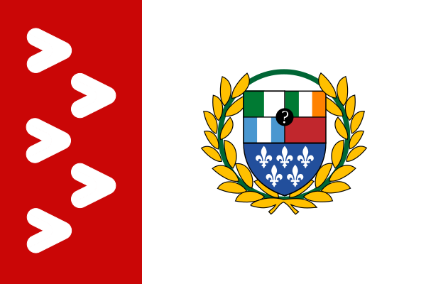

Une fédération née du Parc
La Parcum Fœderatio, ou Fédération du Parc, est une micronation fondée le 26 mars 2025 à Montréal. Elle réunit ses provinces et territoires sous une même Constitution, et sa souveraineté appartient au peuple, qui la délègue au Conseil du MMT et au Sénat.
Saint-Paul-de-la-Croix
Province fondatrice et siège de la capitale fédérale.
Fédération consulaire
Cinq Consuls, un Sénat représentant les provinces et une Cour Suprême.
26 mars 2025
Date officielle de la naissance de la Fédération.
Montréal & Alger
La Fédération est établie à Montréal et s'étend en Algérie avec la Marche d'Alger, créée par le Décret n°030.
Découvrir la Fédération
Le MMT
Le Magical Mystery Tour : les sorties du vendredi soir des Consuls à travers Montréal.
Voir →Institutions
Le Conseil du MMT, le Sénat, la Cour Suprême et les dix ministères.
Voir →Territoires
Les provinces, les territoires et la Marche d'Alger.
Voir →Économie
Le Sparc, les Sociétés d'État et les compagnies privées.
Voir →Constitution
La Constitution de Parcum Federatio et l'Amendement I.
Voir →Décrets
Le Journal officiel : tous les décrets du Conseil, avec les documents originaux.
Voir →Citoyenneté
Devenir citoyen, la résidence permanente et les Ambassades Parquistes.
Voir →Le drapeau et l'emblème

Les chevrons blancs sur la bande rouge viennent du logo de la STM, parce que le métro est à la base du MMT. Il y en a cinq, un par Consul.
Les cinq fleurs de lys représentent le Québec, avec une fleur par Consul.
Les cases du haut de l'écu représentent les Consuls :
- vert et blanc : l'Algérie, pour Aylane Gamar ;
- vert, blanc et orange : l'Irlande, pour Maxime Cimon ;
- bleu, blanc et bleu : le Guatemala, pour Youri Lévesque-Flores ;
- rouge : le Maroc, pour William Tadimi-Choinière ;
- le point d'interrogation au centre : Joshua Martin.